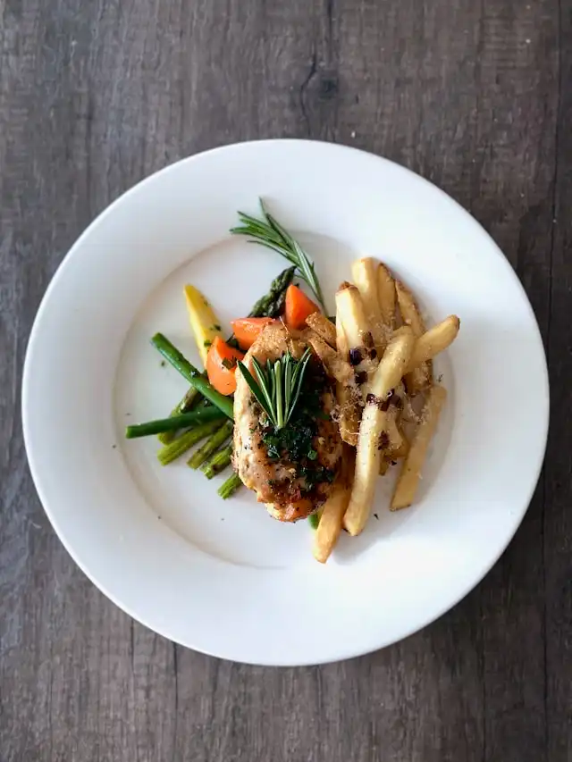

Garlic Herb Chicken
I love this chicken recipe because it's simple, flavorful, and always turns out juicy. It doesn't take long to make, and the garlic and herbs give it a homemade comfort taste without needing any special ingredients. It's my go-to dish when I want something quick, healthy, and delicious.
Ingredients
- 2 boneless, skinless chicken breasts
- 1 tablespoon olive oil
- 2 cloves garlic, minced
- 1 teaspoon dried italian season
- Salt
- Pepper
- Lemon and fresh parsley for garnish
Instructions
- Pat the chicken breasts dry with a paper towel. Season both sides with salt, pepper, and Italian seasoning.
- In a large skillet, heat olive oil over medium heat. Add minced garlic and sauté for 30 seconds until fragrant.
- Add chicken breasts to the pan. Cook for 6-7 minutes on each side, or until golden brown and the internal temperature reaches 165°F (74°C).
- Squeeze a bit of lemon juice over the top or sprinkle with fresh parsley before serving.